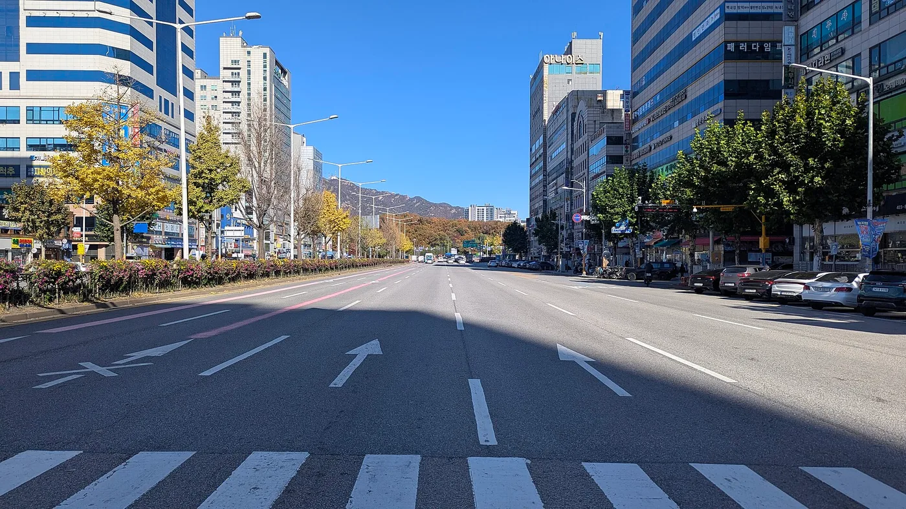

▲ 자진 납부와 이의신청은 기한도 효과도 다르다 ⓒ Wikimedia Commons
차를 세우고 잠깐 다녀왔을 뿐인데 고지서가 옵니다.
여기서 대부분 두 가지 중 하나를 합니다. 그냥 내거나, 억울해하며 미룹니다.
둘 다 손해입니다. 기한과 금액이 다른 선택지가 있습니다.
1. 금액부터 정리하면
| 차종 | 기본 | 동일 장소 2시간 이상 |
|---|---|---|
| 승용차 등 (승용차, 4톤 이하 화물차) | 4만 원 | 5만 원 |
| 승합차 등 (승합차, 4톤 초과 화물차, 특수차, 건설기계) | 5만 원 | 6만 원 |
📍 '동일 장소 2시간 이상'이 붙는 이유
잠깐 세운 것과 장시간 방치는 통행 방해 정도가 다릅니다. 그래서 같은 자리에서 2시간 넘게 확인되면 1만 원이 더 붙습니다.
단속은 보통 일정 시간 간격을 두고 두 번 촬영하는 방식으로 이뤄집니다. 첫 촬영 후 이동하면 가중 대상에서 벗어납니다.
어린이보호구역이나 소화전 앞 같은 특별 구역은 별도로 더 무겁게 매겨집니다. 지자체와 구역 종류에 따라 다르므로 고지서에 적힌 위반 장소와 근거 조항을 확인하는 것이 정확합니다.
2. 20% 감경 — 가장 쉬운 절약
| 차종 | 원래 금액 | 감경 후 |
|---|---|---|
| 승용차 | 4만 원 | 3만 2천 원 |
| 승합차 | 5만 원 | 4만 원 |
📍 조건은 '기한 내 납부'입니다
단속 후 과태료 부과 사전통지서가 발송됩니다. 여기에 의견 제출 기한(통상 10일 이상)이 적혀 있습니다.
이 기간에 자진 납부하면 부과될 과태료의 20% 범위에서 감경됩니다. 기한을 넘기면 감경 없이 정식 고지로 넘어갑니다.
즉 고지서를 방치하는 것만으로 8천 원을 더 내게 됩니다.
⚠️ 다툴 생각이라면 자진 납부하면 안 됩니다
· 자진 납부는 위반 사실을 인정하는 절차입니다
· 납부하고 나서 이의를 제기하기는 어렵습니다
· 억울하다면 납부하지 말고 의견 제출부터 해야 합니다
· 즉 먼저 판단하고, 그다음에 납부 여부를 정해야 합니다
▲ 자진 납부는 위반 인정 절차다. 다툴 거라면 납부부터 하면 안 된다 ⓒ Wikimedia Commons
3. 다투는 절차 — 두 단계입니다
| 단계 | 시점 | 내용 |
|---|---|---|
| ① 의견 제출 | 사전통지 단계 | 부과 전에 사정을 설명 — 가장 간단 |
| ② 이의신청 | 최초 고지서 수령 후 60일 이내 | 과태료 재판 절차로 이행 |
📍 ①에서 끝내는 편이 낫습니다
의견 제출은 아직 과태료가 확정되기 전 단계입니다. 서류 한 장으로 끝나는 경우가 많습니다.
이의신청은 비송사건절차법에 따른 과태료 재판으로 넘어갑니다. 절차가 무겁고 시간이 걸립니다.
억울한 사정이 있다면 사전통지 단계에서 바로 설명하는 것이 효율적입니다.
✅ 의견 제출에 넣을 만한 사정
· 긴급한 사정 — 응급 상황, 고장으로 인한 부득이한 정차
· 단속 사진의 오류 — 차량 번호 오인, 위치 착오
· 이미 매도한 차량 — 명의 이전 시점 확인
· 도난 차량 — 신고 접수 사실
· 표지판 문제 — 금지 표지가 가려져 있었던 경우(사진 필요)
공통점은 '증빙'입니다. 사정 설명만으로는 받아들여지기 어렵습니다. 사진, 접수증, 진료 기록 같은 자료가 함께 있어야 합니다.
4. 미루면 이자가 붙습니다
| 구분 | 내용 |
|---|---|
| 초기 가산금 | 납부 기한 경과 시 3% |
| 중가산금 | 매월 1.2% 누적 |
| 최대 | 가산율 75% (최대 5년) |
📍 4만 원이 7만 원이 됩니다
최대 가산율 75%가 붙으면 4만 원짜리 과태료는 7만 원이 됩니다. 여기에 자진 납부 감경 8천 원을 못 받은 것까지 더하면, 처음과 두 배 넘게 벌어집니다.
장기 미납은 차량 압류나 번호판 영치로 이어질 수 있습니다.
5. 신고로 단속되는 경우
요즘은 단속 카메라나 순찰만이 아닙니다. 주민 신고로도 과태료가 부과됩니다.
✅ 신고 단속이 늘어난 구역
· 소화전 주변
· 교차로 모퉁이
· 버스정류소 주변
· 횡단보도 위
· 어린이보호구역
이 구역들은 계도 없이 즉시 부과되는 경우가 많습니다
"잠깐이니까 괜찮겠지"가 통하지 않는 곳들입니다. 특히 소화전과 어린이보호구역은 안전과 직결돼 있어 예외를 인정받기 어렵습니다.
어린이보호구역 관련 규정은 어린이보호구역 속도위반에서 함께 다뤘습니다.

▲ 횡단보도·소화전·어린이보호구역은 계도 없이 즉시 부과되는 경우가 많다 ⓒ Wikimedia Commons
6. 한 가지 주의
📍 금액과 절차는 지자체마다 다를 수 있습니다
이 글의 금액은 일반적인 기준입니다. 구역 종류, 시간대, 지자체 조례에 따라 달라질 수 있습니다.
정확한 금액과 납부·이의 절차는 고지서에 적힌 담당 부서나 해당 시·군·구청에서 확인하는 것이 안전합니다.
▲ 금액과 절차는 지자체 조례에 따라 달라질 수 있다 ⓒ Wikimedia Commons
▲ 교차로 모퉁이는 신고 단속이 잦은 구역이다 ⓒ Wikimedia Commons
7. 정리
주정차 위반 과태료는 승용차 4만 원, 승합차 5만 원입니다. 동일 장소에서 2시간 이상 확인되면 각각 1만 원씩 더 붙습니다.
의견 제출 기한 안에 자진 납부하면 20% 감경돼 승용차는 3만 2천 원이 됩니다. 다만 자진 납부는 위반 인정이므로, 다툴 생각이라면 납부하지 말고 의견 제출부터 해야 합니다.
이의신청은 최초 고지서를 받은 날부터 60일 이내입니다. 미납하면 가산금 3%에 매월 1.2%가 붙어 최대 75%까지 늘어납니다. 4만 원이 7만 원이 되는 구조입니다.